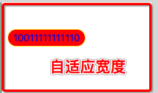

#import "UILabel+Extension.h"
- (void)viewDidLoad {
[super viewDidLoad];
//直接引用分类功能
[UILabel createLabelWithContent:@"10011111111110" addView:self.view lableX:10 lableY:111 lableH:30 fontSize:16 backgroundColor:[UIColor redColor] textColor:[UIColor blueColor] borderColor:[UIColor yellowColor]];
}
+ (instancetype)createLabelWithContent:(NSString *)content addView:(UIView *)view lableX:(CGFloat)lableX lableY:(CGFloat)lableY lableH:(CGFloat)lableH fontSize:(CGFloat)fontSize backgroundColor:(UIColor *)backgroundColor textColor:(UIColor*)textColor borderColor:(UIColor *)borderColor{
NSString *string = [NSString stringWithFormat:@"%@",content];
CGRect textRect = [self boundingString:string size:CGSizeMake([UIScreenmainScreen].bounds.size.width, [UIScreen mainScreen].bounds.size.height *2) fontSize:fontSize];
CGFloat rowWidth = 0.0;
if (string.length == 1) {
rowWidth = textRect.size.width + 35;
}else{
rowWidth = textRect.size.width + 25;
}
UILabel *lable = [[UILabel alloc]initWithFrame:CGRectMake(lableX, lableY, rowWidth, lableH)];
lable.layer.masksToBounds = YES;
lable.layer.cornerRadius = 15;
lable.layer.borderColor = borderColor.CGColor;
lable.layer.borderWidth = 1;
lable.backgroundColor = backgroundColor;
lable.textAlignment = NSTextAlignmentCenter;
lable.textColor = textColor;
lable.text = string;
[view addSubview:lable];
return lable;
}
//自动适应 lable 的宽度 和 高度
+ (CGRect)boundingString:(NSString *)string size:(CGSize)size fontSize:(NSInteger)fontSize
{
NSStringDrawingOptions options = NSStringDrawingTruncatesLastVisibleLine |NSStringDrawingUsesLineFragmentOrigin | NSStringDrawingUsesFontLeading;
NSDictionary *attributes = @{NSFontAttributeName: [UIFontsystemFontOfSize:fontSize]};
return [string boundingRectWithSize:size options:optionsattributes:attributes context:nil];
}